1
Click the Import tab
Open Data Workbench from the sidebar. The three tabs are Import, Export and Update.
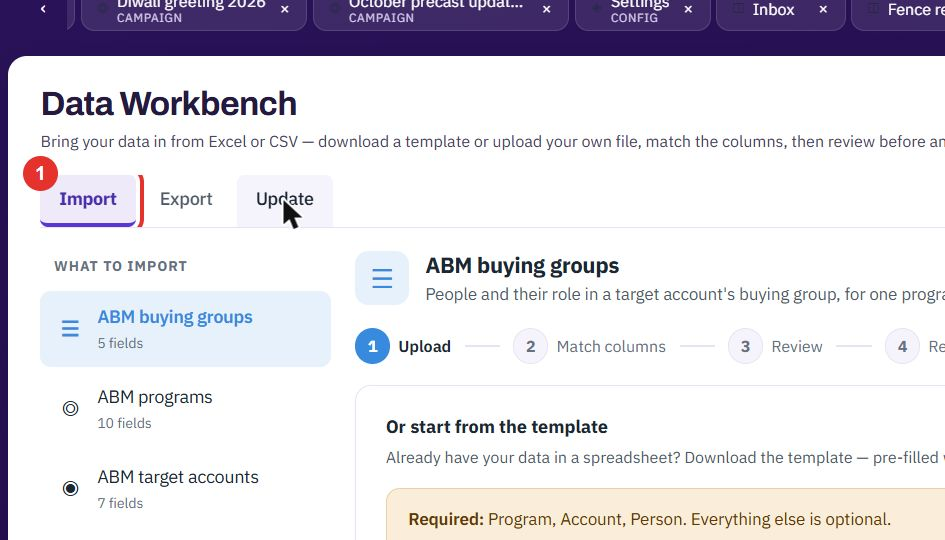
Data Workbench moves records in and out in bulk. Import checks every row and shows what will and will not go in before anything is saved. Export gives you a CSV. Update changes records you exported earlier.
Do this to load many records at once, for example a customer list. The screens below use Accounts.
Open Data Workbench from the sidebar. The three tabs are Import, Export and Update.

The list under WHAT TO IMPORT shows each kind of record and how many fields it has. Click Accounts.
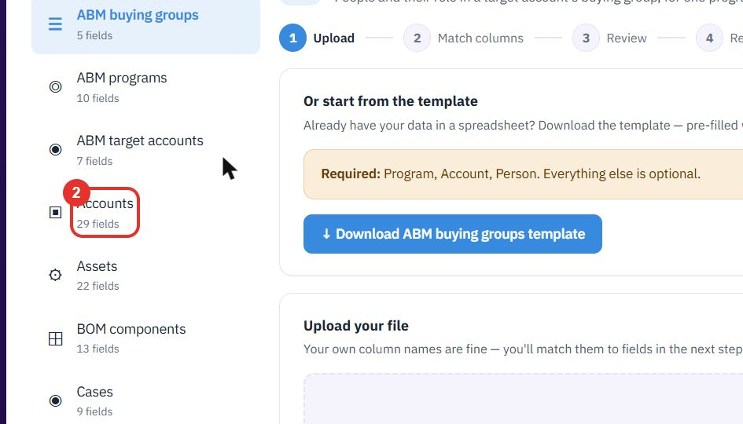
The yellow note says which columns are Required, here Name and Type. ↓ Download Accounts template gives you a spreadsheet with every column and example rows. Replace the examples with your data.
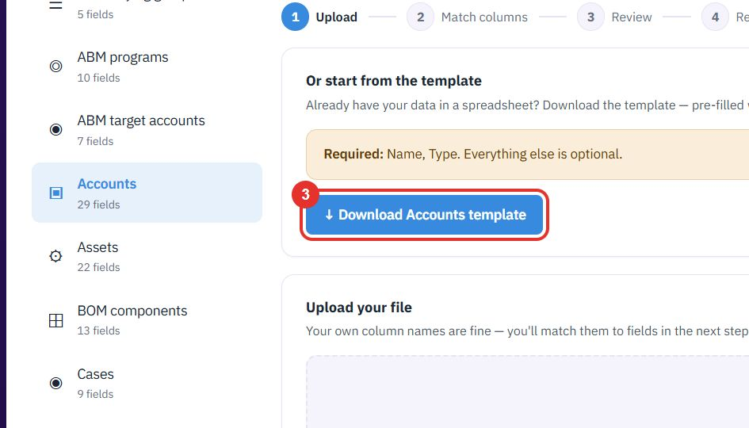
Drop an Excel (.xlsx) or CSV file on the dashed box, or click it to browse. The limit is 15 MB. Your own column names are fine.
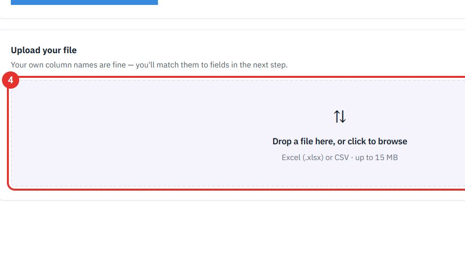
Step 2 shows each column of your file with its first value. A badge such as 3 columns matched tells you how many were matched on their own.
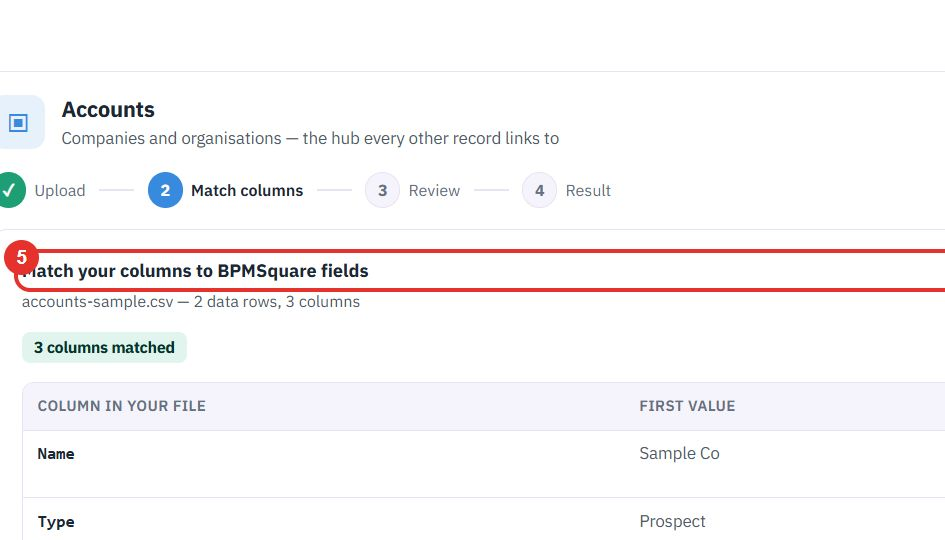
In IMPORTS INTO, choose which field each column goes to. A column set to don’t import is left out.
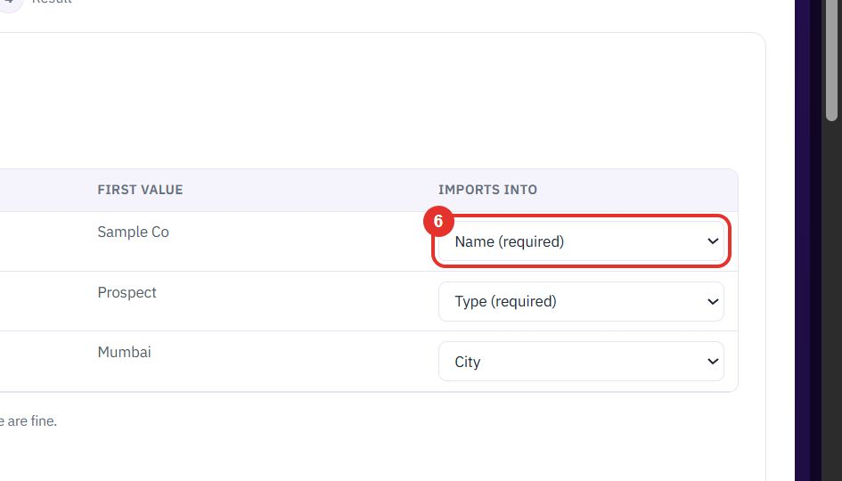
Click Continue to review →. Nothing is saved yet. Choose a different file goes back to step 1.
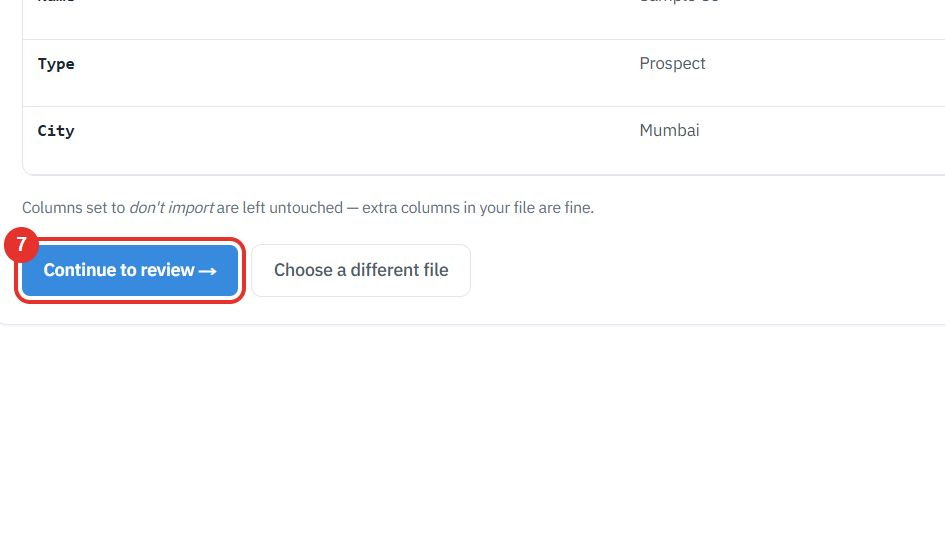
Step 3 says Rows with problems are left out — everything else is imported. The chips show how many rows are ready and how many have problems. Show only problems hides the good rows.
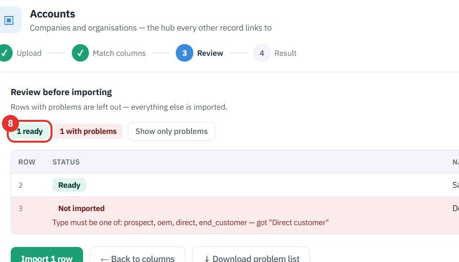
A row that cannot go in shows Not imported and the reason in red, for example which values a field accepts. ↓ Download problem list gives you those rows to fix.
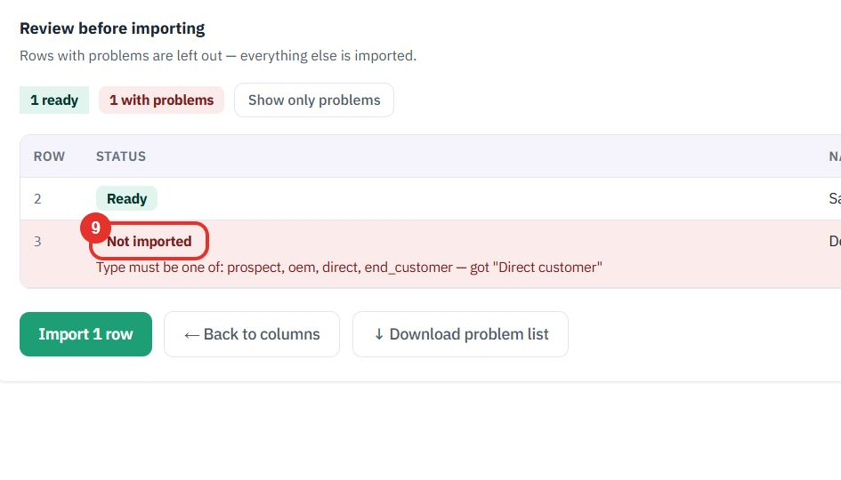
Import 1 row saves only the rows marked Ready. ← Back to columns returns to step 2. Step 4, Result, then shows what was saved.
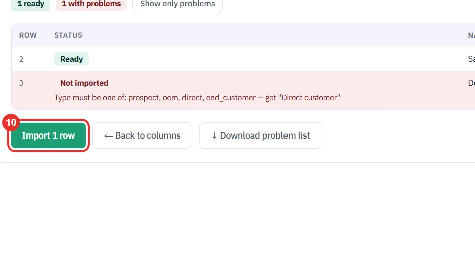
Do this to take records out as a spreadsheet, or to get the file you need for an update.
Click Export next to Import.
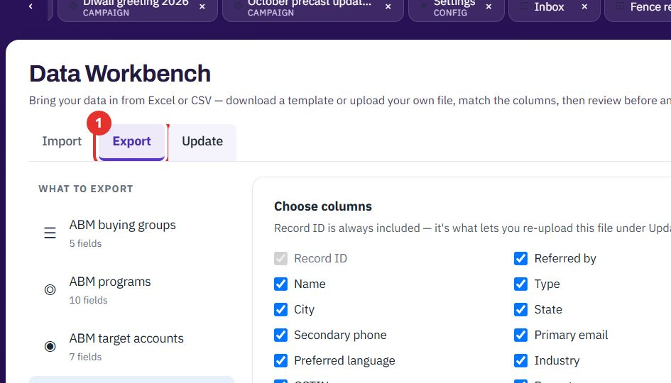
Under WHAT TO EXPORT, click the kind of record, here Accounts.
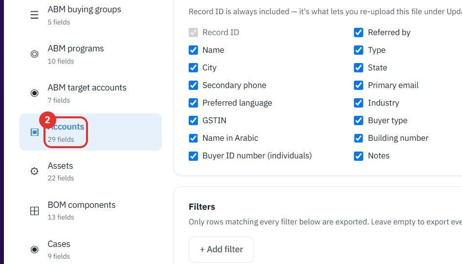
Under Choose columns, untick the columns you do not want. Record ID is always included. It is what lets you upload the file again under Update.
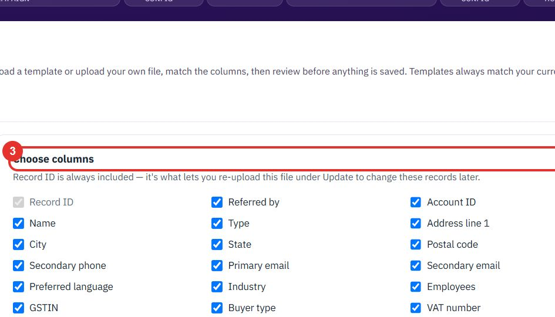
Under Filters, click + Add filter to export only matching rows. Leave it empty to export everything.
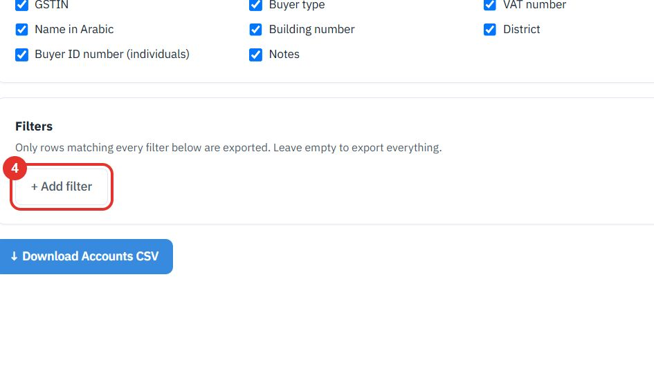
Click ↓ Download Accounts CSV to get the file.
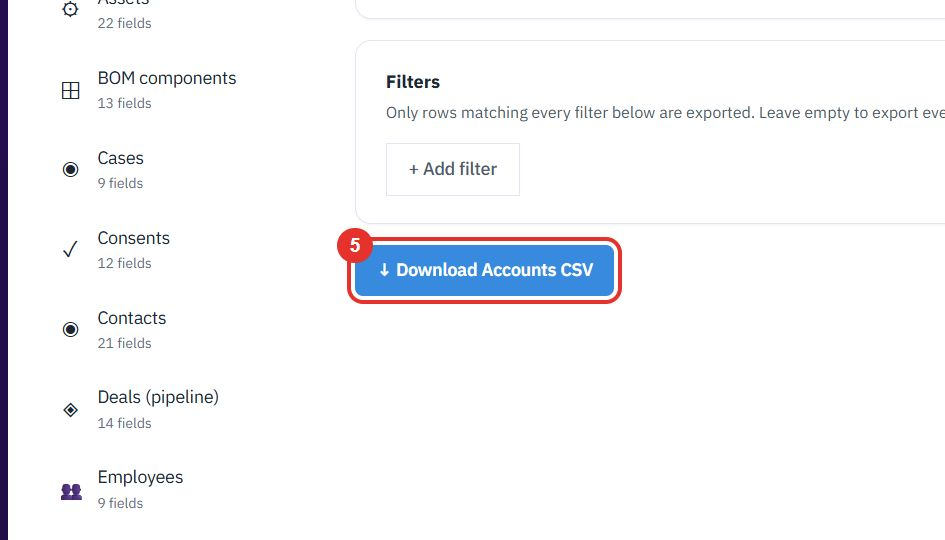
Do this to change many records you already have, for example fix a column for every account.
Click Update, then the kind of record, here Accounts. The same four steps follow: Upload, Match columns, Review and Result.
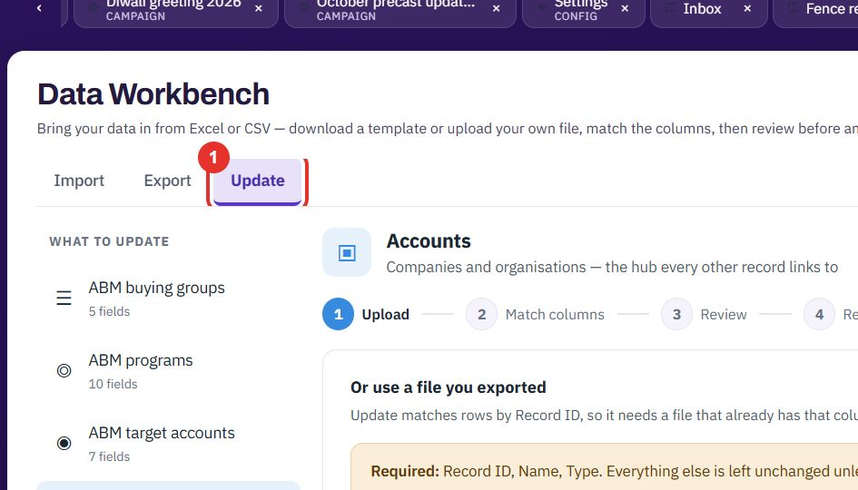
Update matches rows by Record ID, so your file must have that column. Go to Export, download a CSV, change the values you want, then upload it here. Everything you do not map is left as it is.
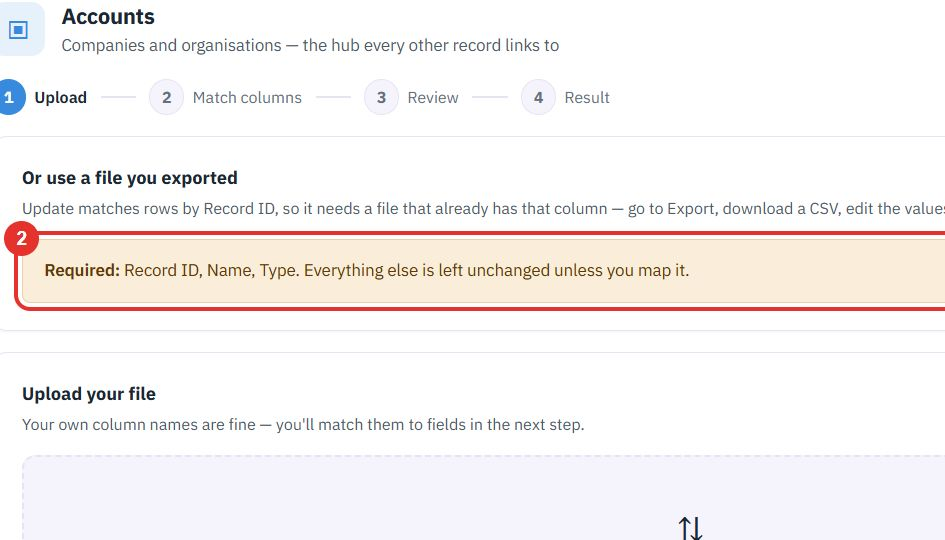
Drop the edited CSV on the dashed box. The match and review steps work as in Import.
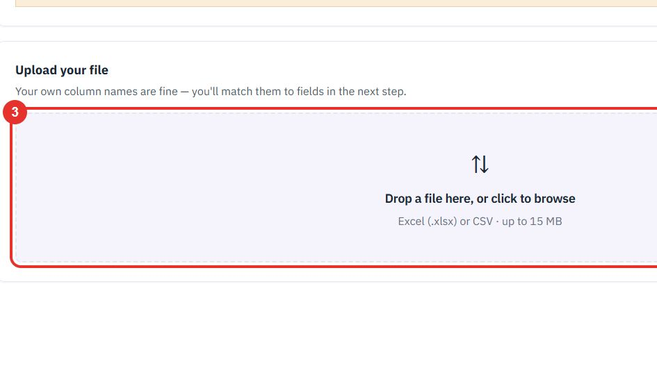
Twenty minutes on a live workspace. Your BOQ, your suppliers.